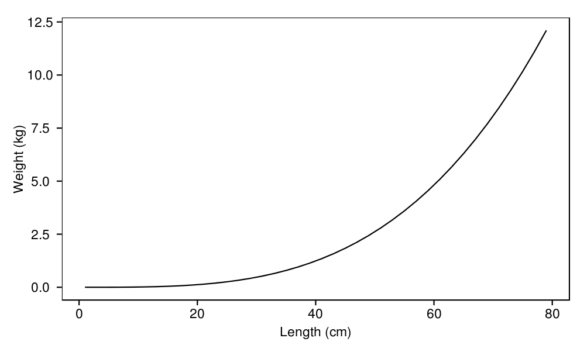
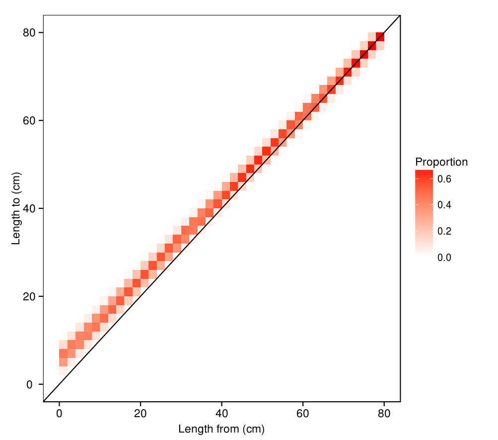
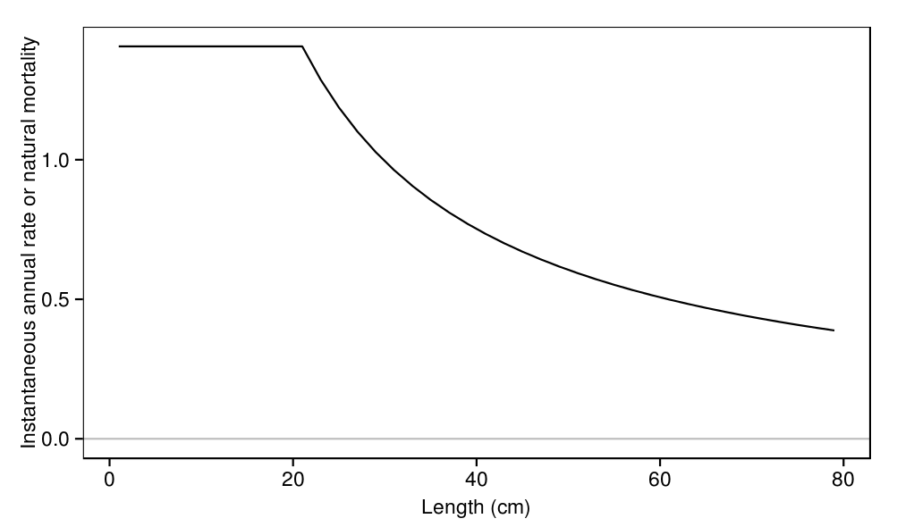
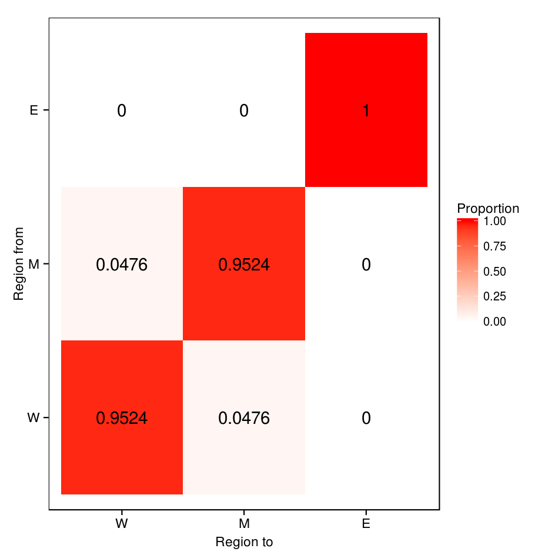
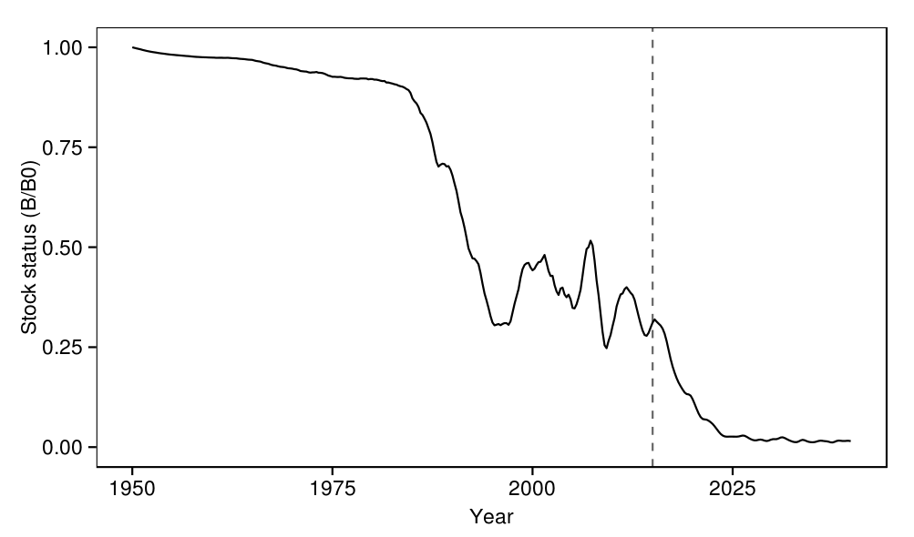
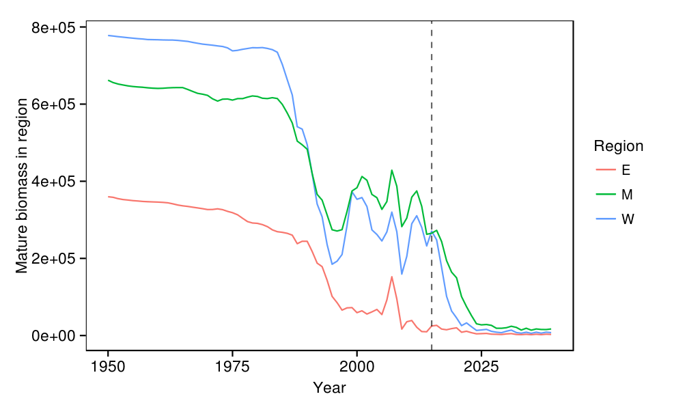
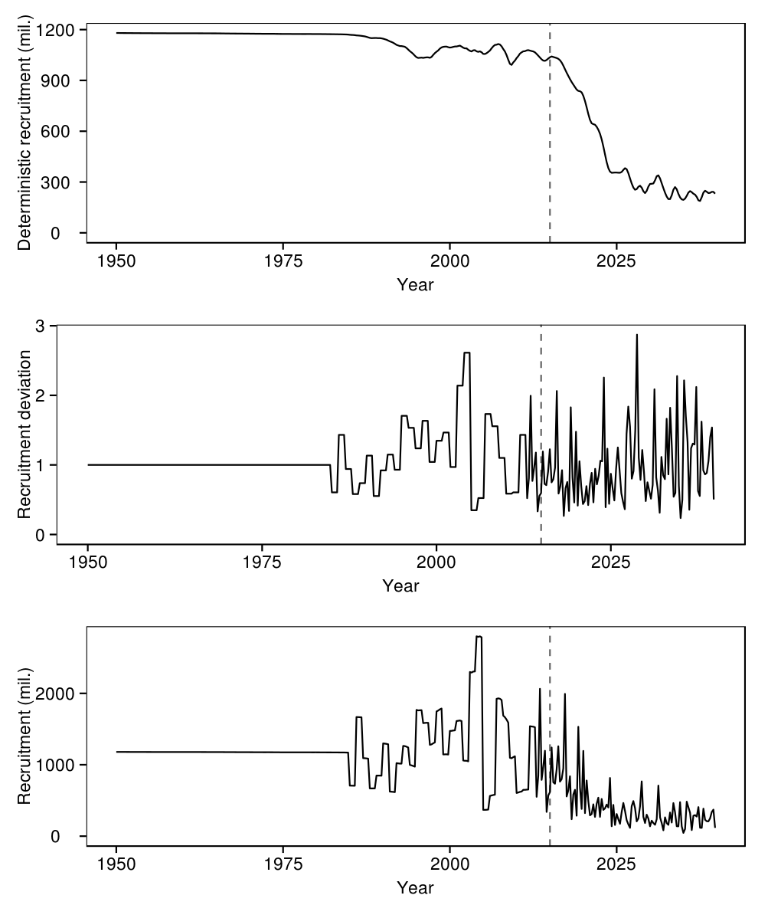
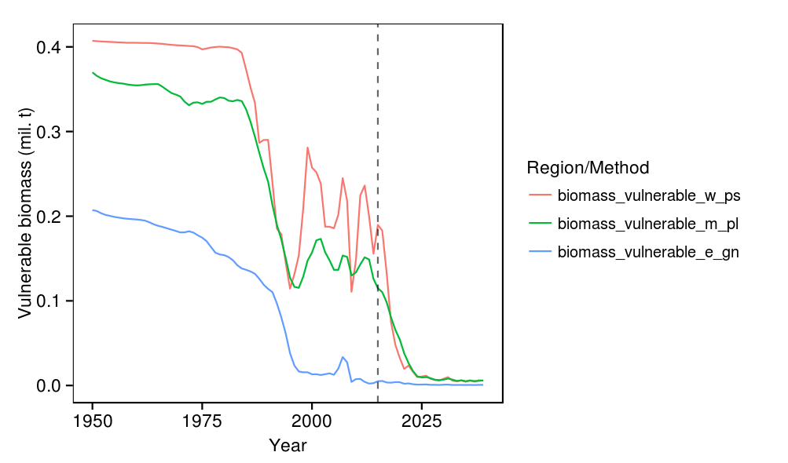
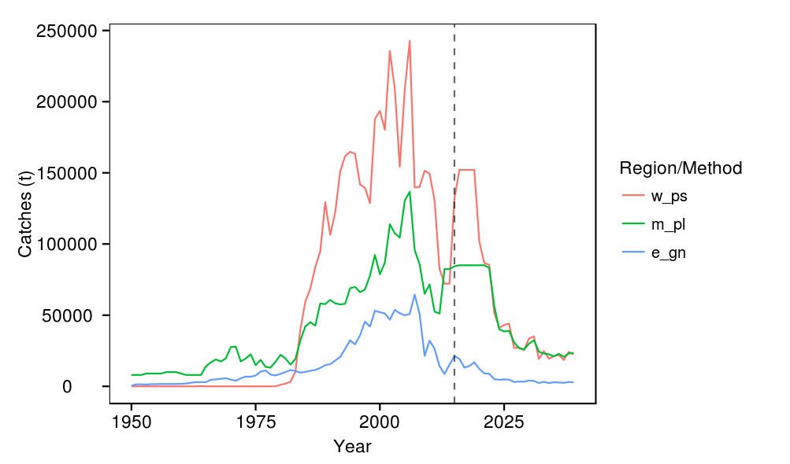
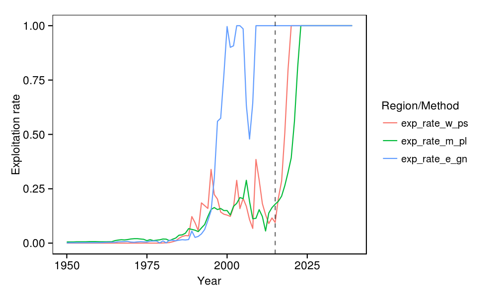

Indian Ocean skipjack model : general outputs
This section presents model outputs generated from the run task (i.e. ./ioskj.exe run) which uses the reference parameter set defined in the parameters/input folder. Since those parameter values are user inputs the following may not reflect best parameter estimates. These summaries are primarily intended for illustrating the model struture.
source('../../common.R',local=T)
load(c(
'lengths','recruits_sizes',
'growth_increments','growth',
'mortalities',
'weights','maturities','selectivities',
'movement',
'numbers',
'track'
),from='../../model/output')
Recruits size distribution
print( ggplot(recruits_sizes,aes(x=length,y=value)) + geom_line() + labs(x="Length (cm)",y="Proportion") )
Weight and maturity
print( ggplot(weights,aes(x=length,y=value)) + geom_line() + labs(x="Length (cm)",y="Weight (kg)") )
print( ggplot(maturities,aes(x=length,y=value)) + geom_line() + labs(x="Length (cm)",y="Proportion mature") )
Growth
print( ggplot(growth_increments,aes(x=length,y=value)) + geom_hline(y=0,colour='grey') + geom_line() + labs(x="Length (cm)",y="Quarterly growth increment (cm)") )
print( ggplot(growth) + geom_tile(aes(y=length,x=length_from,fill=value)) + scale_fill_gradient(low="white",high="red") + geom_abline(a=0,b=1) + labs(x="Length from (cm)",y="Length to (cm)",fill="Proportion") )
Mortality
print( ggplot(mortalities,aes(x=length,y=value)) + geom_hline(y=0,colour='grey') + geom_line() + labs(x="Length (cm)",y="Instantaneous annual rate or natural mortality") )
Movement
print( ggplot(movement,aes(y=region_from,x=region,fill=value,label=round(value,4))) + geom_tile() + scale_fill_gradient(low="white",high="red") + geom_text() + labs(y="Region from",x="Region to",fill="Proportion") )
print( ggplot(numbers) + geom_line(aes(x=length,y=value/1e6)) + facet_grid(age~region,scale='free_y') + labs(x="Length (cm)",y="Number (mil.)") )
print( ggplot(ddply(numbers,.(region,length),summarise,numbers=sum(value)/1e6)) + geom_line(aes(x=length,y=numbers)) + facet_grid(.~region) + labs(x="Length (cm)",y="Number (mil.)") )
Selectivities
print( ggplot(selectivities,aes(x=length,y=value,colour=method))+ geom_line() + labs(x="Length (cm)",y="Selectivity (prop.)",colour='Method') )
plot_track <- function(what,label){
plot <- ggplot(track,aes(x=year+quarter/4)) +
geom_line(aes_string(y=what)) +
geom_hline(y=0,alpha=0) +
geom_vline(x=2015,alpha=0.6,linetype=2) +
labs(x='Year',y=label)
print(plot)
plot
}
Biomass and recruitment trajectories
plot_track('biomass_status','Stock status (B/B0)')

print( ggplot(subset(track,quarter==0),aes(x=year+quarter/4)) + geom_line(aes(y=biomass_spawners_w,colour='W')) + geom_line(aes(y=biomass_spawners_m,colour='M')) + geom_line(aes(y=biomass_spawners_e,colour='E')) + geom_hline(y=0,alpha=0) + geom_vline(x=2015,alpha=0.6,linetype=2) + labs(x='Year',y='Mature biomass in region',colour='Region') )
p1 = plot_track('recruits_determ/1e6','Deterministic recruitment (mil.)')
p2 = plot_track('recruits_deviation','Recruitment deviation')
p3 = plot_track('recruits/1e6','Recruitment (mil.)')
multiplot(p1,p2,p3)

Fishery related trajectories
temp <- melt(subset(
track,quarter==0,select=c('year','biomass_vulnerable_w_ps','biomass_vulnerable_m_pl','biomass_vulnerable_e_gn')
),id.vars='year')
print(
ggplot(temp,aes(x=year,y=value/1e6,colour=variable)) + geom_line() +
geom_vline(x=2015,alpha=0.6,linetype=2) +
geom_hline(yintercept=0,alpha=0) +
labs(x='Year',y='Vulnerable biomass (mil. t)',colour='Region/Method')
)

temp <- ddply(track,.(year),summarise, w_ps = sum(catches_w_ps), m_pl = sum(catches_m_pl), e_gn = sum(catches_e_gn) ) temp <- melt(temp,id.vars='year') print( ggplot(temp,aes(x=year,y=value,colour=variable)) + geom_line() + geom_vline(x=2015,alpha=0.6,linetype=2) + labs(x='Year',y='Catches (t)',colour='Region/Method') )
temp <- melt(subset(
track,quarter==0,select=c('year','exp_rate_w_ps','exp_rate_m_pl','exp_rate_e_gn')
),id.vars='year')
print(
ggplot(temp,aes(x=year,y=value,colour=variable)) + geom_line() +
geom_vline(x=2015,alpha=0.6,linetype=2) +
labs(x='Year',y='Exploitation rate',colour='Region/Method')
)
